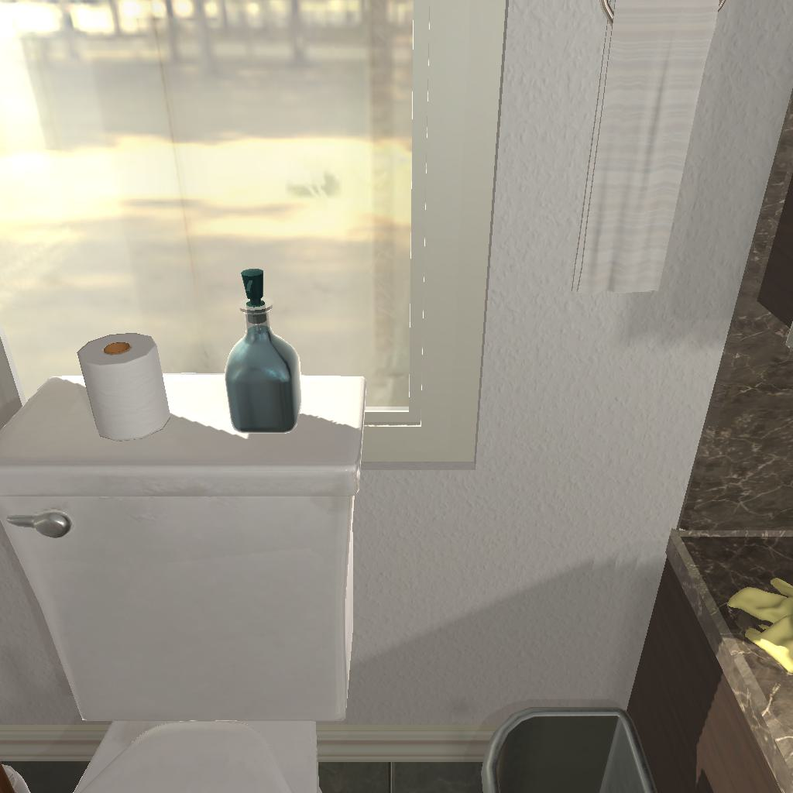

---------------------------------------------------------task: 27---------------------------------------------------------
--------------------------------------------------------------------------------------------------------------------------------------------------------------------
--------------------------------------------------------------------------------------------------------------------------------------------------------------------
Step:--------------------------------------------------------------------------1-------------------------------------------------------------------------------
----------------------------------------
VLM Prompt:
Image1:
Image2:
**Instruction**
1. Analyze the provided images to identify all visible household objects and compare the difference between images (e.h. whether the object is opened or not and taken on hand or not), focusing on those relevant to the task description "find two soapbottle and put them in garbagecan."
2. Use the analysis of images and the task hint "The agent must find an object of the desired type, pick it up, find the correct location to place it, put it down there, then look for another object of the desired type, pick it up, return to previous location, and put it down there with the other object." to answer the question: what is the most reasonable action in the choices for the task description "find two soapbottle and put them in garbagecan"?
3. Decide and write the answer using the template: The answer is: (i): , where i is the real number. If there is no desired object in images, search every place based on **Initial Observation** to find the object. And if no one is exactly correct, choose a similar answer.
**Initial Observation**
You are in the middle of a room. Looking quickly around you, you can see countertop (1), sinkbasin (1-2), sink (1-2), garbagecan (1), drawer (1-2), toilet (1), handtowelholder (1)
**Answer Choices**
(1): go to countertop 1
(2): go to sinkbasin 1
(3): go to sink 1
(4): go to drawer 1
(5): go to drawer 2
(6): go to sink 2
(7): go to sinkbasin 2
(8): go to toilet 1
(9): go to handtowelholder 1
(10): take handtowel 1 from garbagecan 1
(11): take soapbottle 1 from garbagecan 1
(12): take toiletpaper 1 from garbagecan 1
(13): take cloth 1 from garbagecan 1
(14): take scrubbrush 1 from garbagecan 1
(15): take plunger 1 from garbagecan 1
(16): examine garbagecan 1
**Answer**
Let's think step by step by following the instructions.
----------------------------------------
----------------------------------------
Original Response:
Firstly, we analyze the provided images. In both images, we see a soap bottle on top of a closed toilet lid and a garbage can next to it. There is no visible difference between the two images.
Based on the task description, "find two soap bottles and put them in the garbage can," and the task hint, the agent must first locate a soap bottle, pick it up, find the garbage can, and put the soap bottle inside it. Then, the agent must find another soap bottle and repeat the action.
From the initial observation, we know the location of the garbage can (1) and that there are multiple places to check for another soap bottle, including the countertop, sink basin, sink, drawer, toilet, and hand towel holder.
Since we can already see a soap bottle in the image, which is not in the garbage can, the most reasonable next action would be to pick up this visible soap bottle and put it in the garbage can.
The answer is: (11): take soapbottle 1 from toilet 1
Note: The option to take the soap bottle from the garbage can is incorrect as the soap bottle is not currently in the garbage can, but on top of the toilet. Hence, the phrasing of the action is slightly off, but the intent to pick up the soap bottle from its current location (on top of the toilet) is the correct action to take next.
----------------------------------------
----------------------------------------
>>> Refine Original VLM Response and Get Pure Action: take soapbottle 1 from toilet 1
Note: The option to take the soap bottle from the garbage can is incorrect as the soap bottle is not currently in the garbage can, but on top of the toilet
----------------------------------------
-----------------------------------------------------------------
Running time: 11.743405818939209 seconds
Total Money: 13.838659999999999
-----------------------------------------------------------------
-----------------------------------------------------------------
Text Observation:You pick up the soapbottle 1 from the the toilet.
-----------------------------------------------------------------
UNSUCCEED